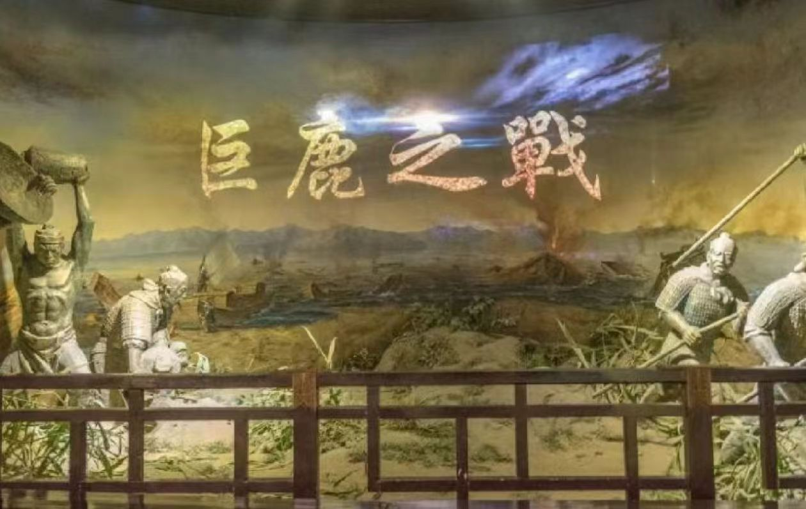

巨鹿之战是中国历史上著名的战役之一，发生在秦朝末期，具体时间为公元前207年底至公元前208年初。这场战役的地点位于巨鹿（今河北省平乡县西南），是项羽的楚军与汉军、章邯的秦军之间的一场决战。
当时，汉军和章邯的秦军联手围攻了项羽的楚军，将楚军围困在巨鹿城中。项羽面临着极大的困境，但他并未放弃，而是采取了积极的策略，一方面坚守城池，一方面派出部队突围。
项羽派遣的部队在突围过程中，遭遇了汉军和秦军的联合围攻，形势十分危急。然而，项羽的将领们英勇善战，凭借着出色的战术和士兵们的勇敢，成功突破了敌军的包围，为楚军争取到了生存的机会。
在楚军成功突围后，项羽立即组织起反击，他利用汉军和秦军之间的矛盾，采取了分兵两路的策略，一路攻击汉军，一路攻击秦军。在项羽的巧妙指挥下，楚军以少胜多，最终击败了汉军和秦军，赢得了这场战役的胜利。
巨鹿之战的胜利对于项羽来说意义重大，它不仅挽救了楚军的危局，也极大地提升了项羽的声望和地位。同时，这场战役也成为中国历史上以少胜多的经典战例之一，被后人广泛传颂。
公元前213年，秦始皇为了加强中央集权，统一思想，下令焚烧除了秦国史书以外的列国史书，以及民间私藏的《诗》《书》和百家语。这一行动的目的是消除可能威胁秦朝统一的思想和观念，确保国家的稳定。然而，这一举措却导致了大量珍贵文化典籍的毁灭，给中国历史文化造成了不可估量的损失。
与此同时，秦始皇还下令坑杀了一批儒生。这些儒生因为不满秦朝的暴政和文化专制，而私下议论朝政。秦始皇得知后，大为震怒，下令将这些人活埋于咸阳城边的一个大坑中。这一事件引起了广泛的社会关注和抗议，加剧了秦朝与知识分子之间的矛盾。
焚书坑儒事件是秦朝文化专制政策的集中体现，它严重打击了中国的传统文化和知识分子阶层。这一事件不仅导致了大量文化遗产的丧失，也加剧了社会的动荡和不安。在焚书坑儒之后，秦朝的文化政策更加严厉，思想控制更加严密，这对于中国历史的发展产生了深远的影响。
尽管焚书坑儒事件已经过去了两千多年，但它仍然是中国历史上一个令人痛心的记忆。这一事件提醒我们，文化多样性和思想自由是人类社会进步的重要基石，任何试图通过暴力手段统一思想和文化的做法都是不可取的。